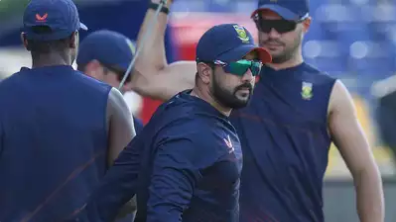
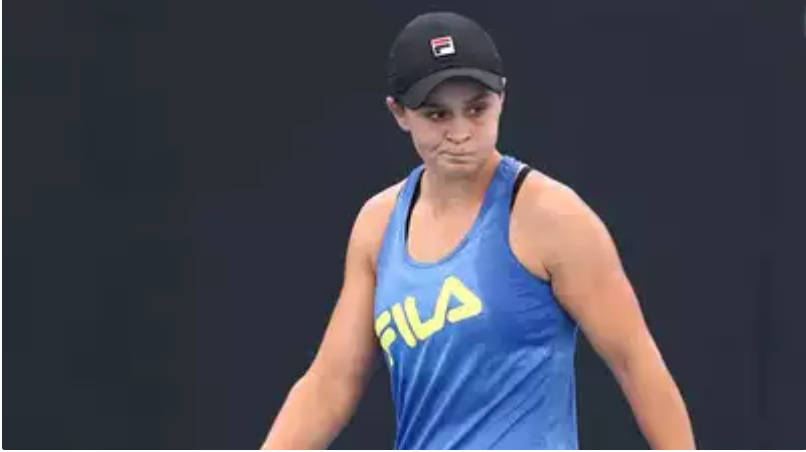
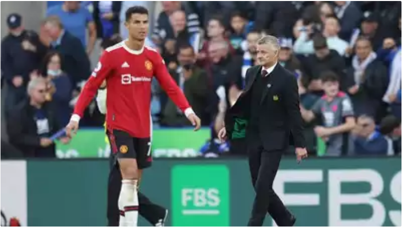
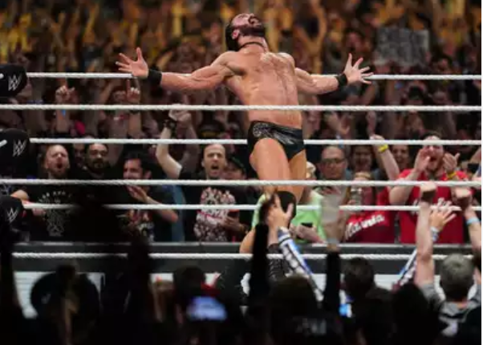
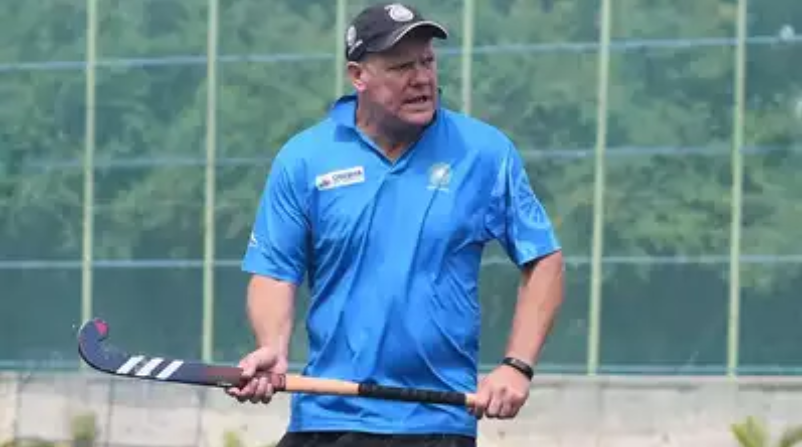

Sports
T20 World Cup: Pace-heavy South Africa, Australia look for spin effect
Australia vs South Africa: World Cup. It's been a rivalry alright, with Sydney (1992), Headingley and Edgbaston (1999) standing out in the 50-over showpiece. However, across six previous World Cups in T20s, the two sides have met just once, in Colombo in 2012, with the Aussies running away with a victory.
T20 World Cup: England take on West Indies in clash of the champions

Five years have gone by, and as the two teams square off again in Dubai on the first day of the 2021 event, both Brathwaite and Stokes - who are not part of their teams - will be missed. But a West Indies-England clash always brings a different flavour. While England are the most improved limited-overs team in the last five years with a sense of machine-like precision that won them the 2019 ODI World Cup, West
World number one Ashleigh Barty pulls out of WTA Finals, ends season
The Australian has not played since a shock third-round loss at the US Open in September and has now formally ended a year that earned her five titles, including a second major at Wimbledon after her French Open triumph in 2019. "I wanted to let everyone know that I won't be competing in any further tournaments in 2021, including the WTA Finals in Mexico," the 25-year-old said in a statement.
Ronaldo is unique but Liverpool's Salah is 'on fire', says Solskjaer
Salah leads the Premier League goal scoring charts with seven goals and also has four assists in eight games while he also has five strikes in the Champions League. Liverpool manager Juergen Klopp did not want to compare the two forwards earlier on Friday but Solskjaer praised Salah and also his team mates on the frontline -- Sadio Mane, Roberto Firmino and Diogo Jota.
Drew McIntyre gears up for the Orton challenge
Sunday night promises to be a memorable night for the WWE fans as current champion Drew McIntyre will be taking on Randy Orton in the grand finale. Ahead of the keenly-awaited clash, Drew spoke to TOI on facing Randy, how he is different from his previous opponent - Brock Lesnar and more. Excerpts:
Junior Hockey WC: Holders India need to play good friendlies, trying to arrange a few, says Graham Reid
BENGALURU: The senior Indian men's hockey team chief coach Graham Reid on Thursday said the junior side should play some practice matches against quality opponents before it starts the defence of its FIH Junior World Cup title in Bhubaneswar next month. Emphasising on the importance of playing practice games, Reid, who is overseeing India's preparation for the event